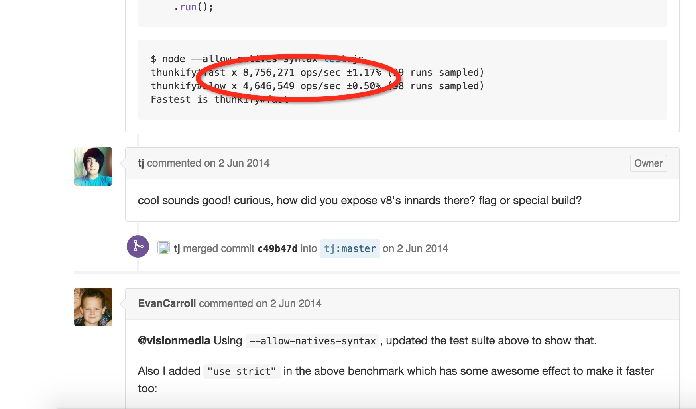
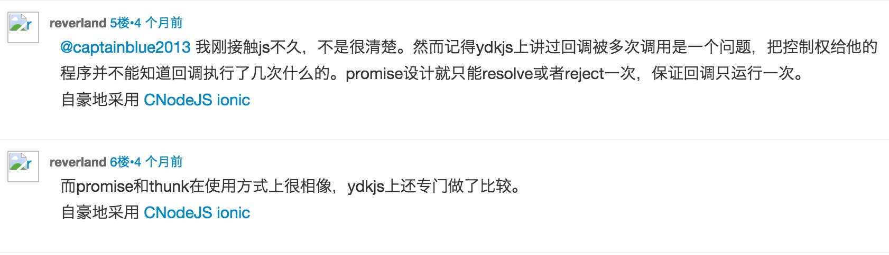
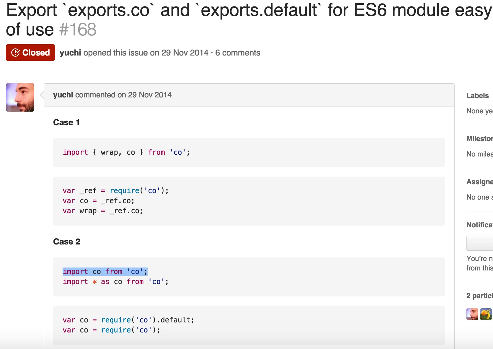
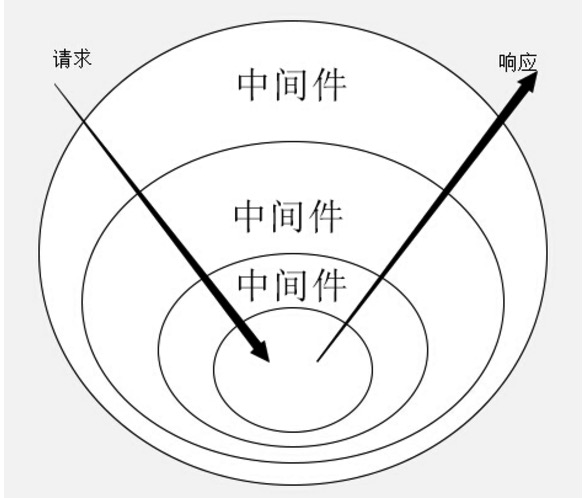
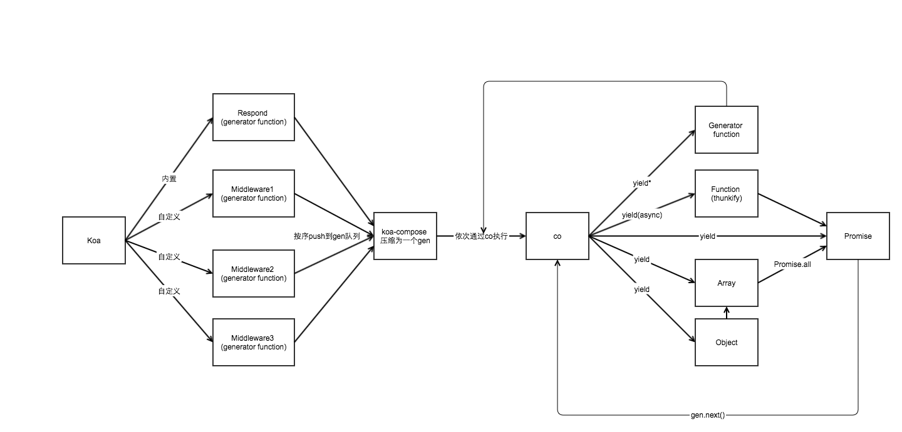

Co源码以及与Koa的深入理解
tj大神的co，将本来应该是一个数据类型的generator变成了一种处理异步的解决方案
其实主要就是一个遍历函数，将promise或者generator的异步函数一直执行到得到最后的结果再返回，这样就可以把本来放到异步中的方法按照同步的顺序来写。
yield
函数内部的yield后面传入的可以是以下
- Promise(就是promise嘛)
- thunks(就是一个偏函数，执行之后只有一个简单的拥有一个callback的参数的函数)
- array(通过array可以并行执行里面的function，
并行是主要的价值) - objects(和array相同，也是并行执行里面的yieldable，
并行是主要的价值) - generators
- generators functions(下面的这两个东西可以支持，但是并不被推荐，因为我们应该转向更加标准的promise)
API
### co(fn*).then 将一个generator解决为一个promise
var fn = co.wrap(fn*)
讲一个generator转化为一个返回promise的常规函数
本质的探索
他的最初实现是基于Thunk函数的。接收了一个生成器函数作为参数，并生成了一个实际操作函数，函数通过接收回调的方式来传入最后的返回值。
所以先了解下thunk函数
这东西的发展是由函数的求值策略的分歧决定的，两种求值策略
var b = 1;
function a(x,y){
return y;
}
a(b+1);
上面的代码一b+1在什么时候执行比较好，
一种是传值调用，在进入函数体之前就直接执行完，把值传进去。c语言是这么做的
一种是传名调用，将表达式传入函数体，只在用到他的时候求值。Hskell语言是这么做的
前一种会简单一些，但是会有性能损失，所以倾向于传名调用。
传名函数的编译器实现，其实就是放入一个临时函数，再将临时函数传入函数体，这个临时函数就叫做thunk函数。
js语言是传值调用，他的thunk含义有些不同，js中，thunk函数替换的不是表达式，而是多参数函数，将它替换成单参数的版本，且只接受回调函数作为参数。
//正常的readFile函数
fs.readFile(fileName, callback);
var readFileThunk = Thunk(fileName);
readFileThunk(callback);
//thunk版本的函数
function Thunk(fileName){
return function(callback){
fs.readFile(fileName,callback);
}
}
所以其实任何有回调的函数都是可以搞成thunk形式的，下面是一个简单的生成器
var Thunk = function(fn){
return function () {
//先传入其他的参数初始化
var args = Array.prototype.slice.call(arguments);
//传入callback返回的函数
return function(callback){
args.push(callback);
//实际调用的时候
return fn.apply(this,args);
}
}
}
var readFileThunk = Thunk(fs.readFile);
readFileThunk(fileA)(callback);
tj的thunkify源码
javascript
/**
* Module dependencies.
*/
var assert = require('assert');
/**
* Expose `thunkify()`.
*/
module.exports = thunkify;
/**
* Wrap a regular callback `fn` as a thunk.
*
* @param {Function} fn
* @return {Function}
* @api public
*/
function thunkify(fn){
assert('function' == typeof fn, 'function required');
return function(){
//这里就是将所有的参数放进了一个新的数组，这里之所以不用[].slice。是因为有人在bluebird docs发现，如果直接这样泄露arguments，v8的一些优化的编译会被搁置，就会有性能上的损失。
var args = new Array(arguments.length);
var ctx = this;
for(var i = 0; i < args.length; ++i) {
args[i] = arguments[i];
}
return function(done){
//这里用called是为了标记只执行了一次，类似于promise的resolve和reject只能执行一次一样。
var called;
args.push(function(){
if (called) return;
called = true;
//因为arguments是一个list，必须得用apply才能在done传入。
done.apply(null, arguments);
});
//这里用个try catch，可以在执行失败时走一遍callback，传入err信息
try {
fn.apply(ctx, args);
} catch (err) {
done(err);
}
}
}
};


generator函数的回调流程管理
包装成这样到底有个啥用场？用在了generator的流程管理
var fs = require('fs');
var thunkify = require('thunkify');
var readFile = thunkify(fs.readFile);
var gen = function* (){
var r1 = yield readFile('/etc/fstab');
console.log(r1.toString());
var r2 = yield readFile('/etc/shells');
console.log(r2.toString());
};
var g = gen();
var r1 = g.next();
r1.value(function(err, data){
if (err) throw err;
var r2 = g.next(data);
r2.value(function(err, data){
if (err) throw err;
g.next(data);
});
});
就如同上面的，generator的执行过程实际上是将同一个回调函数，反复传入next的value结果中。这样我们就可以递归的来自动完成这个过程了。于是据诞生了基于thunk函数的执行器，也就是co了。
最简单的co
function run(fn) {
var gen = fn();
function next(err, data) {
var result = gen.next(data);
if (result.done) return;
result.value(next);
}
next();
}
run(gen);
执行器帮我们不停地调用传入生成器的next函数，如果done为true的时候，代表迭代完成，会将值传给回调函数。
当然前提是每一个一步函数都得是thunk函数的形式。
thunk并不是generator函数的自动执行的唯一方案。我们需要的其实只是一个机制，循环调用，并且交出和返回程序的执行权，thunk可以做到，promise也可以做到。
首先将readfile包装成promise形式
javascript
var fs =require('fs');
var readFile = function(fileName){
return new Promise(function(resolve,reject){
fs.readFile(fileName,function(error,data){
if(error){reject(error)}
resolve(data);
})
});
}
var gen = function* (){
var f1 = yield readFile('f1.js');
var f2 = yield readFile('f2.js');
console.log(f1);
console.log(f2);
}
然后手动执行下generator函数
var g = gen();
g.next().value.then(function(data){
g.next(data).value.then(function(data){
g.next(data);
});
})
写一个自动执行器
function run(gen){
var g = gen();
function next(data){
var result = g.next(data);
if(result.done) return result.value;
result.value.then(function(data){
next(data);
});
}
next();
}
co的源码
下面的是co源码的逐行阅读，先把参照的一些图片列举出来
//array原生的slice
var slice = Array.prototype.slice;
//这里写的这么古怪就只是想在es6的模块引入时更加舒服一些，参见下面的图片3
module.exports = co['default'] = co.co = co;
//将传入的generator函数包装成一个返回promise的方法
//这是一个独立的方法，就是将传入的函数包装成了co执行前的形式
co.wrap = function (fn) {
//存了一个指针指向原generator函数
createPromise.__generatorFunction__ = fn;
return createPromise;
function createPromise() {
//返回的方法调用就会直接执行co。
return co.call(this, fn.apply(this, arguments));
}
};
//执行generator或者generator函数然后返回一个promise
function co(gen) {
var ctx = this;
var args = slice.call(arguments, 1)
// 将所有的东西放到一个promise里面，来防止引起内存泄露错误的promise chaining。
//tudo：看一下这个issue see https://github.com/tj/co/issues/180
//参见下面的内存泄露的研究
//https://github.com/promises-aplus/promises-spec/issues/179 看的我好累，完全没有看懂啊！！！
//总之不管怎样，他是把传进来的东西包装成了一个promise
return new Promise(function(resolve, reject) {
//这里是判断下gen是不是函数，generators function执行之后是一个object
if (typeof gen === 'function') gen = gen.apply(ctx, args);
//传入的不是generators函数，没有next，就直接resolve返回结果;这里是错误兼容而已，因为co就是基于generator的，传入其他的没有意义
if (!gen || typeof gen.next !== 'function') return resolve(gen);
//主要就是走下面的onFulfilled方法，这个方法返回的是一个promise(resolve或者reject)
onFulfilled();
function onFulfilled(res) {
var ret;
try {
//调用第一次next方法
ret = gen.next(res);
} catch (e) {
//出错了直接reject出去
return reject(e);
}
//将第一次的结果({done:true,value:{}})传入内部方法next
next(ret);
}
//promise失败的时候调用
//这里在promise错误的时候，就会尝试向外throw err。Genertor的属性，可以内部抛出，外部不活。如果我们对这个yield进行了try catch，就会被捕获，不处理的话，就会reject出去，在co的catch语句中co(*fn).catch处理。
function onRejected(err) {
var ret;
try {
ret = gen.throw(err);
} catch (e) {
return reject(e);
}
next(ret);
}
//循环得到next的结果，return的还是一个promise
function next(ret) {
//如果done为true的话，代表执行结束，返回一个resolve的promise
if (ret.done) return resolve(ret.value);
//既然还没执行完，就将ret.value转换成一个promise
var value = toPromise.call(ctx, ret.value);
//如果成功转化为了promise，就在这个promise执行完了再调用onFulfilled方法
if (value && isPromise(value)) return value.then(onFulfilled, onRejected);
return onRejected(new TypeError('You may only yield a function, promise, generator, array, or object, '
+ 'but the following object was passed: "' + String(ret.value) + '"'));
}
});
}
//将yield后面的东西转化成一个promise
function toPromise(obj) {
//如果不存在的话，直接返回，走最后的报错流程
if (!obj) return obj;
//判断传入的是不是promise，是的话直接返回
if (isPromise(obj)) return obj;
//判断传入的是不是generator，或者generator function，是的话，继续调用co函数进行循环~
if (isGeneratorFunction(obj) || isGenerator(obj)) return co.call(this, obj);
//如果就是个普通的thunk函数，也把他转化为promise
if ('function' == typeof obj) return thunkToPromise.call(this, obj);
//如果是array或者object的话，也走相应地变换方法
if (Array.isArray(obj)) return arrayToPromise.call(this, obj);
if (isObject(obj)) return objectToPromise.call(this, obj);
//如果都不是，直接返回，走最后的报错流程
return obj;
}
//这里将thunk转化成了promise，thunk就是调用的时候传入一个error和res的function，就在最外面包了个promise就行了
function thunkToPromise(fn) {
var ctx = this;
return new Promise(function (resolve, reject) {
fn.call(ctx, function (err, res) {
if (err) return reject(err);
if (arguments.length > 2) res = slice.call(arguments, 1);
resolve(res);
});
});
}
//这里的array转化为promise其实就是通过Promise.all来包裹，这个方法只接受promise的数组，并且装化为一个新的promise
//参见下面的promise平行执行的研究
function arrayToPromise(obj) {
return Promise.all(obj.map(toPromise, this));
}
//将一个object转化为promise，其实就是内部调用了promise.all方法而已
function objectToPromise(obj){
var results = new obj.constructor();
var keys = Object.keys(obj);
var promises = [];
for (var i = 0; i < keys.length; i++) {
var key = keys[i];
var promise = toPromise.call(this, obj[key]);
if (promise && isPromise(promise)) defer(promise, key);
else results[key] = obj[key];
}
return Promise.all(promises).then(function () {
return results;
});
function defer(promise, key) {
// predefine the key in the result
results[key] = undefined;
promises.push(promise.then(function (res) {
results[key] = res;
}));
}
}
//检查是否是promise，果然就是简单的判断他有没有then方法
function isPromise(obj) {
return 'function' == typeof obj.then;
}
//这里判断是不是generator就是判断他的next和throw方法是不是function
function isGenerator(obj) {
return 'function' == typeof obj.next && 'function' == typeof obj.throw;
}
//判断是否是generatorFunction就是判断了他的constructor的name
function isGeneratorFunction(obj) {
var constructor = obj.constructor;
//这里是为了解决没有constructor的对象，比如Object.create(null)
if (!constructor) return false;
//这里两种情况会返回true，一种是名字正确地，一种是他的prototype是generator
if ('GeneratorFunction' === constructor.name || 'GeneratorFunction' === constructor.displayName) return true;
return isGenerator(constructor.prototype);
}
//就是通过constructor来判断是不是一个简单的对象
function isObject(val) {
return Object == val.constructor;
}
图片3

promise chaining导致的内存泄露
这里只是源码的一个小注释，去看了不少东西
阅读了https://github.com/tj/co/issues/180
有人发现在一个无限循环的for循环里面使用co调用一个异步操作，会发生内存泄露
有人推断是所有的promise都被连接了起来，阻止了gc的回收
有人测试了基于thunk的v3，发现ok，v4发现内存泄露，并且使用工具发现确实是promise的问题
死马说这事规范里的问题，bluebird和then/promise已经做出了修复，
最后hax说是es6 spec “bug”
接下来看一个解决方案
就是用一个promise从外面包裹住全部，为什么这样有用？？！！
接下来阅读https://github.com/promises-aplus/promises-spec/issues/179
promise的平行执行
promise被创建的时候就开始了他们的任务，是无法被执行的。他们只代表了结果的状态，将他们传给promise.all的时候甚至都是并行执行的。他不关心执行顺序，也不关心是否平行运行。 tudo:看一下nodejs的多线程？？
Co的错误处理
这里主要是涉及到generator.throw方法，可以在generator外部抛出异常，而在generator内部来catch住异常。
co里面使用了这个属性，就可以针对某几个yield进行try catch，如果不进行处理，统一的会在后面的catch语句中co(*fn).catch找到。
Koa执行的理解

请求进来的时候会一次经过各个中间件进行执行，中间件之间的跳转是yield next，执行完了之后就会逆序执行。
app.use(function *(next){
var start = new Date;
//执行到这句话的时候跳到下一个中间件
yield next;
//下面的中间件执行完了之后再执行下面的部分
var ms = new Date - start;
console.log('%s %s - %s', this.method, this.url, ms);
});
写两个yield next会有什么问题？
这里遇到yield next其实还是会继续向下执行下一个generator的，但是因为下一个中间件done的状态已经是true了，再次调用一下此前已经执行完的generator，调用返回的结果肯定还是done为true，因为此前已经执行完了。所以后面继续yield next是没有意义的~~
Koa的中间件是运行在co函数之下的。
Koa的中间件的实现
这里看到了一个Koa中间件的实现
var gens = [];
function use(generetor){
gens.push(generetor);
}
// 实现co函数
function co(flow, isGenerator){
var gen;
if (isGenerator) {
gen = flow;
} else {
gen = flow();
}
return new Promise(function(resolve){
var next = function(data){
var result = gen.next(data);
var value = result.value;
// 如果调用完毕，调用resolve
if(result.done){
resolve(value);
return;
}
// 如果为yield后面接的为generator，传入co进行递归，并且将promise返回
if (typeof value.next === "function" && typeof value.throw === "function") {
value = co(value, true);
}
if(value.then){
// 当promise执行完毕，调用next处理下一个yield
value.then(function(data){
next(data);
})
}
};
next();
});
}
function trigger(){
var prev = null;
var m = gens.length;
co(function*(){
while(m--){
// 形成链式generator
prev = gens[m].call(null, prev);
}
// 执行最外层generator方法
yield prev;
})
}
use(function*(next){
var d = yield new Promise(function(resolve){
setTimeout(function(){
resolve("step1")
}, 1000)
});
console.log(d);
yield next;
console.log("step2");
});
use(function*(next){
console.log("step3");
yield next;
var d = yield new Promise(function(resolve){
setTimeout(function(){
resolve("step4")
}, 1000)
});
console.log(d);
});
use(function*(){
var d = yield new Promise(function(resolve){
setTimeout(function(){
resolve("step5")
}, 1000)
});
console.log(d);
console.log("step6");
});
trigger();
tudo:啥叫链式的generator??
Koa的运行顺序图

这张图非常详细了，原来本身的respond，以及自己定义的一些中间件统一的会被整成一个generator，然后交给co来执行。
tudo:看到的一个博主说是这里模拟的async和await，这里可以去了解一下??
todu：那个内存泄露的问题看不懂啊，操！！先不管了，要死了
本文引用：
http://segmentfault.com/a/1190000002783230
http://www.ruanyifeng.com/blog/2015/05/thunk.html
http://www.cnblogs.com/axes/p/4683176.html
http://purplebamboo.github.io/2015/01/16/koa-source-analytics-4/